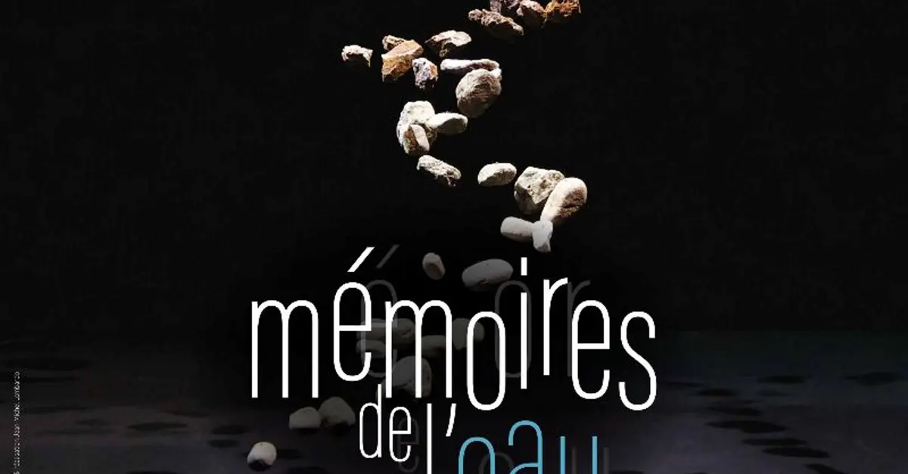
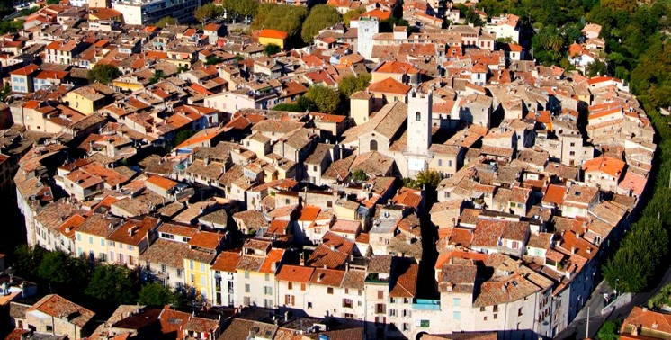

Les Limiers à Vence · Les dossiers
Six dossiers, une ville
Chaque dossier est une piste, chaque piste un reportage. Choisissez une affaire : le film de l'enquête s'ouvre au clic.

Art & spiritualité
Matisse à Vence : quand une ville devient une œuvre
Indice Une chapelle pensée jusqu'au dernier objet du culte.

Exposition
Mémoires de l'eau : dans les coulisses du musée
Indice Un château médiéval devenu musée d'art.

Patrimoine
La vieille ville : 2 000 ans dans quelques rues
Indice Cinq portes, une enceinte elliptique, des maisons adossées aux remparts.

Eau & territoire
Vence, la ville qui vit avec son eau
Indice Une source canalisée par les Romains coule encore, à 13 °C.

Histoire religieuse
Vence, ville d'Église
Indice Un évêché pendant quinze siècles, et un baptistère signé Chagall.

Vie locale
Une fête qui fait vivre Vence
Indice Quand la montagne descend sur la place du Grand Jardin.
Qui mène l'enquête ?
Trois Limiers, six dossiers
Rencontrez la brigade qui a arpenté Vence, micro et caméra en main.
Voir la brigade